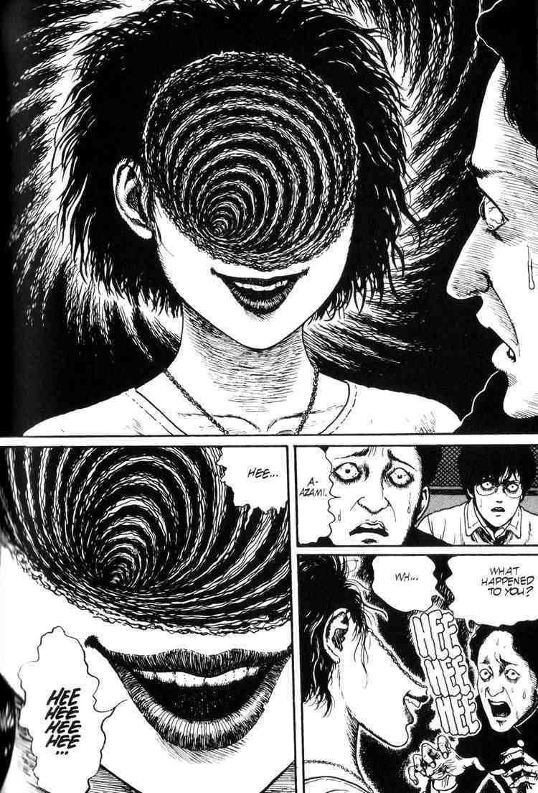
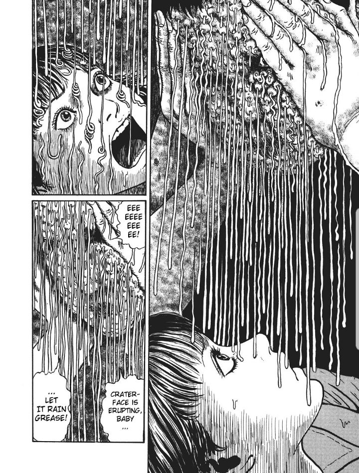

- A three-volume series about a town obsessed with spirals.
- Appeared in weekly manga magazine Big Comic Spirits.
- Appeared in Monthly Halloween, a shojo magazine, winning him the Kazuo Umezu award.
- English translated version later published by Viz Media in 2001.
- Adapted into two video games for WonderSwan and a live-action film.
- Nominated for an Eisner Award in 2003 and placed in the Young Adult Library Services Association’s list of the “Top 10 Graphic Novels for Teens” in 2009.
- Anime series entirely in black and white currently being produced and set for premiere in 2021.